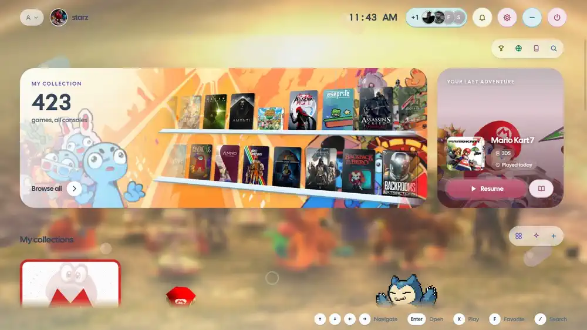
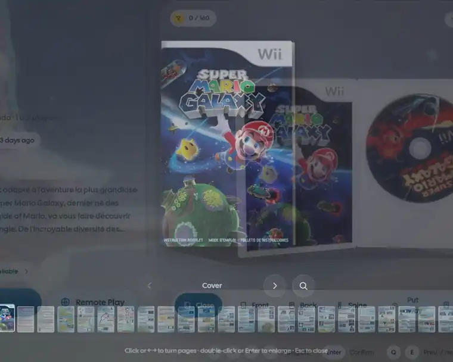
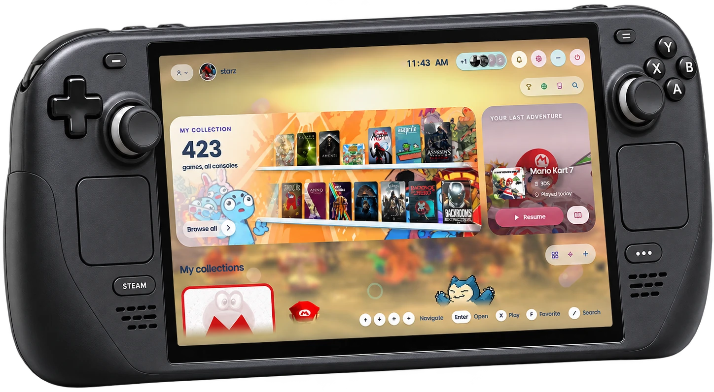

Consoles and PC together on a 3D shelf, with their real covers. iBox installs your emulators, tunes each game for your PC and lets you play together, even remotely.
iBox · Windows · Steam DeckiBoxAll your games, one library.
Manual


Every game in its real case.
Open it. The disc and the manual are inside.
And your whole library comes out.
Scroll
01 / 06
Collections that look like yours
A fan of cases, one big picture or a mosaic, a colour, a franchise icon: every collection gets its own style. Put it wherever you like and decorate the home screen with logos, characters and animated stickers.
02 / 06
Consoles and PC, in one place
Emulators and PC stores (Steam, Epic, GOG, EA, Ubisoft, Xbox, Riot) in one place, with a controller.
SteamEpicGOGEAUbisoftXboxRiot27 consoles
03 / 06
The manual is in the box
iBox finds the real manual of your games, or takes any PDF you choose, and slips it into the case. Read it in double pages, with thumbnails and zoom.
04 / 06
Your emulators, no searching
Pick a console: iBox Platforms downloads the recommended emulator from its official source, checks the file and installs it. iBox never provides games, BIOS files or keys.
GameCube
PlayStation 2
Switch
05 / 06
SmartConfig knows your PC
Emulator settings tailored to your PC and to each game, with backup and one-click undo.
Resolution
Filtering
Performance
06 / 06
The trophy room
A trophy room for RetroAchievements and Steam, with achievements announced while you play.
Achievement unlockedYour first trophy
Made for playing, not configuring
Add your folders: iBox finds your games, their covers and their manuals, then launches them with the right emulator and the right settings.
3D shelf
Every console has its real cases. Open them, turn them over to read the back, just like in a store.
Consoles and PC
Emulators and PC stores (Steam, Epic, GOG, EA, Ubisoft, Xbox, Riot) in one place, with a controller.
iBox Platforms
Emulators install in one click from their official sources; iBox tells you when a new version is out.
SmartConfig
Emulator settings tailored to your PC and to each game, with backup and one-click undo.
Remote Play
Invite friends into your game, up to six players, straight from PC to PC: picture, sound and their controllers.
Manuals in the box
Every case holds its booklet: the game's real manual, to leaf through page by page.
Achievements
A trophy room for RetroAchievements and Steam, with achievements announced while you play.
iNetbox
Your friends and what they are playing live, messages, invites and the Community.
Collections and stats
Sort your games your way, track your play time, pick your theme and wallpaper.
27 supported platforms
From the NES to the Switch 2, plus all your PC games.
NESSuper NintendoNintendo 64GameCubeWiiWii USwitchSwitch 2Game BoyGame Boy ColorGame Boy AdvanceDS3DSPlayStationPlayStation 2PlayStation 3PSPXboxXbox 360Master SystemMega DriveGame GearSaturnDreamcastAtari 2600JaguarPC
iBox on Steam Deck Preview
The same library in your hands: a Linux version built for Game Mode, played with the controller, full screen.

Game Mode: a single window, the Deck's controls, and iBox in your Steam library with its artwork.
Your games: Steam, Epic, GOG and Amazon games installed with Heroic, and your Lutris games.
Emulators: every one installs in one click, just like on Windows, from its official source or Flathub; SmartConfig tunes each game.
Remote Play: join a friend's game running on a Windows PC with iBox.
Battery: iBox saves power on battery and picks up by itself after sleep.
In Desktop Mode, download the .AppImage file and keep it in a folder, for example Applications.
Launch
Right-click › Properties › Permissions: tick Is executable, then open iBox.
Add to Steam
Quit Steam, then Settings › System › Add iBox to Steam. In Game Mode, iBox is waiting in your library.
Still Windows only: hosting a Remote Play game, the in-game overlay and stores without a Linux version (EA, Ubisoft, Xbox, Battle.net). The Steam Deck version updates itself, just like on Windows.
Ready in three steps
Install iBox
No administrator rights needed, in a few seconds. Updates then arrive on their own.
Follow the guide
Profile, game folders, emulators, PC stores: the setup assistant explains everything.
Play
Pick a game on the shelf, iBox takes care of the rest.
On first launch, Windows may show “Windows protected your PC”, because iBox is still a young app. Click More info, then Run anyway.
iBox provides no games, BIOS files or keys: use your own legally owned copies. Emulators come from their official sources. iBox is not affiliated with any manufacturer; the trademarks mentioned belong to their owners.